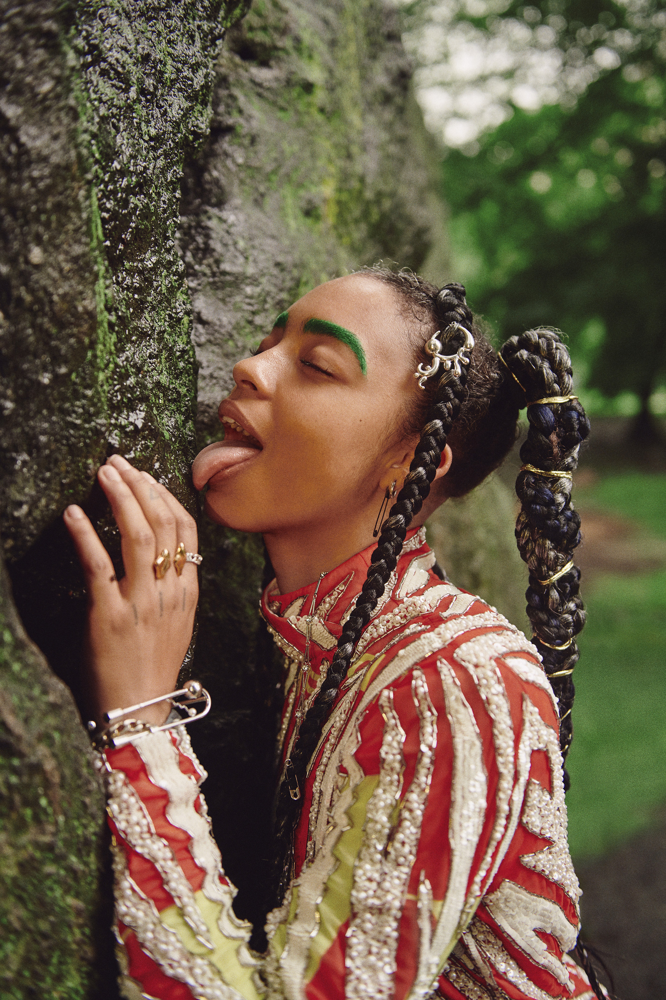
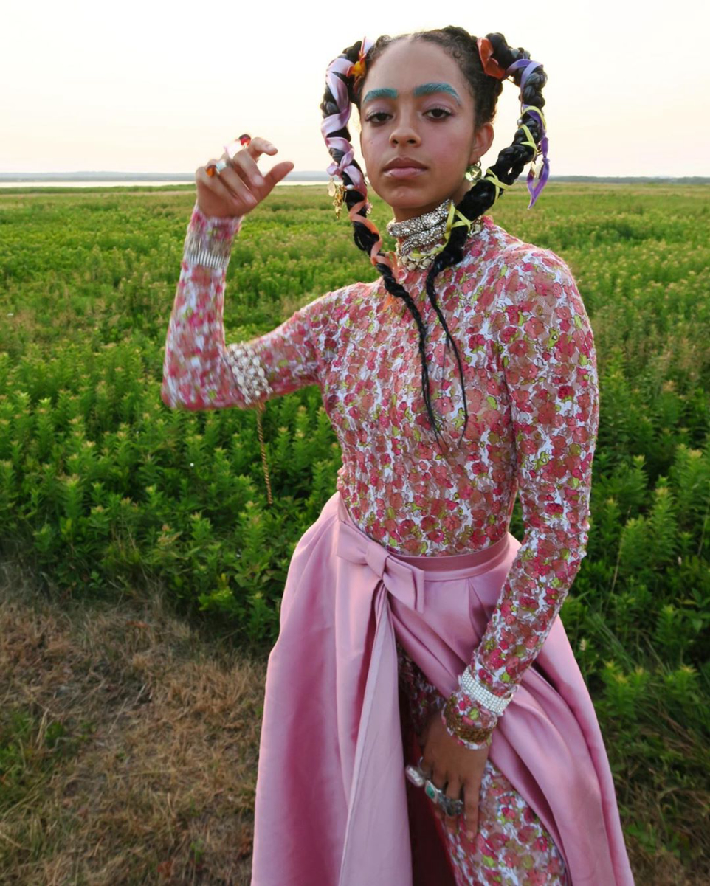
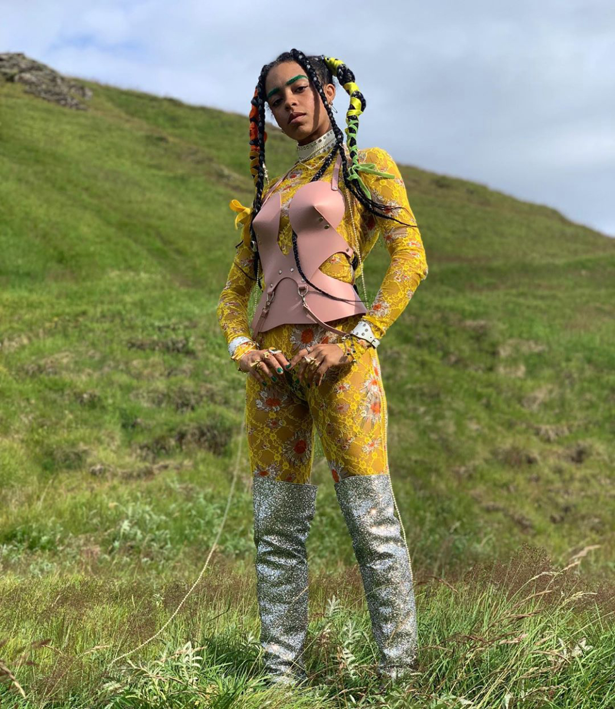
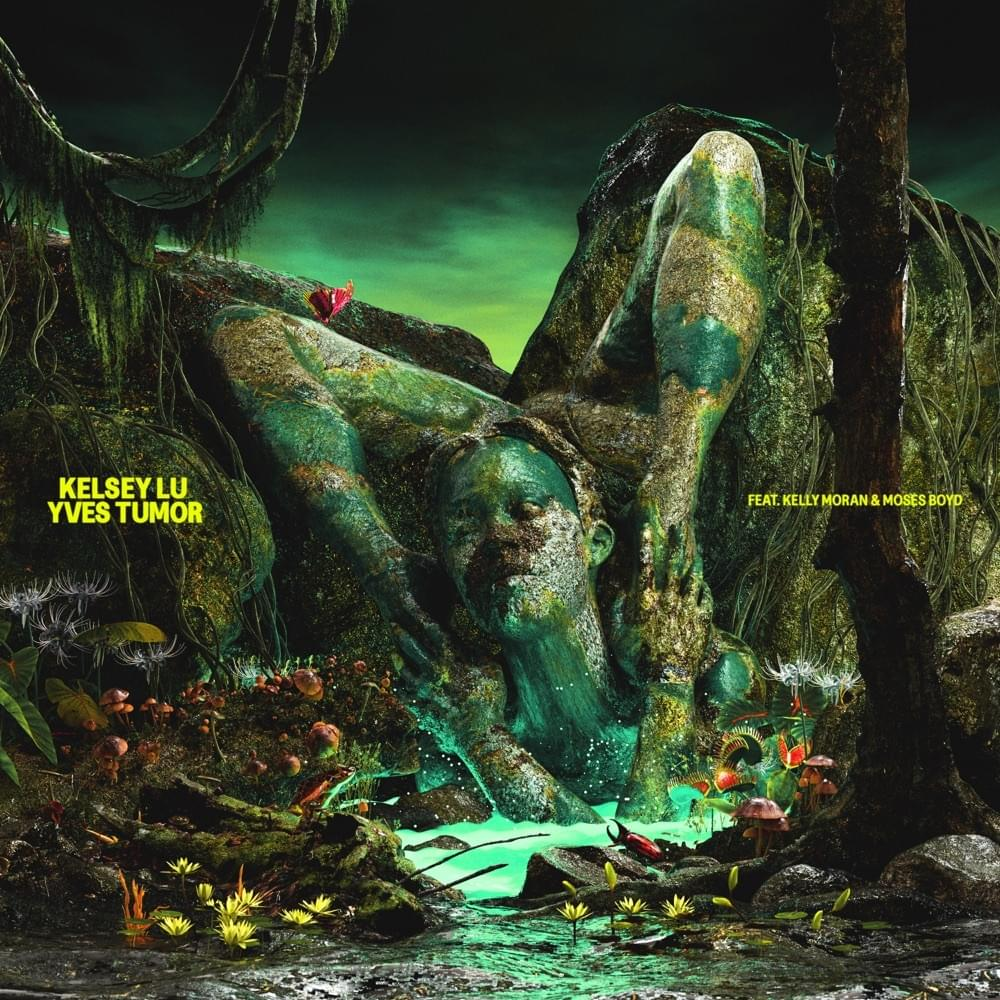
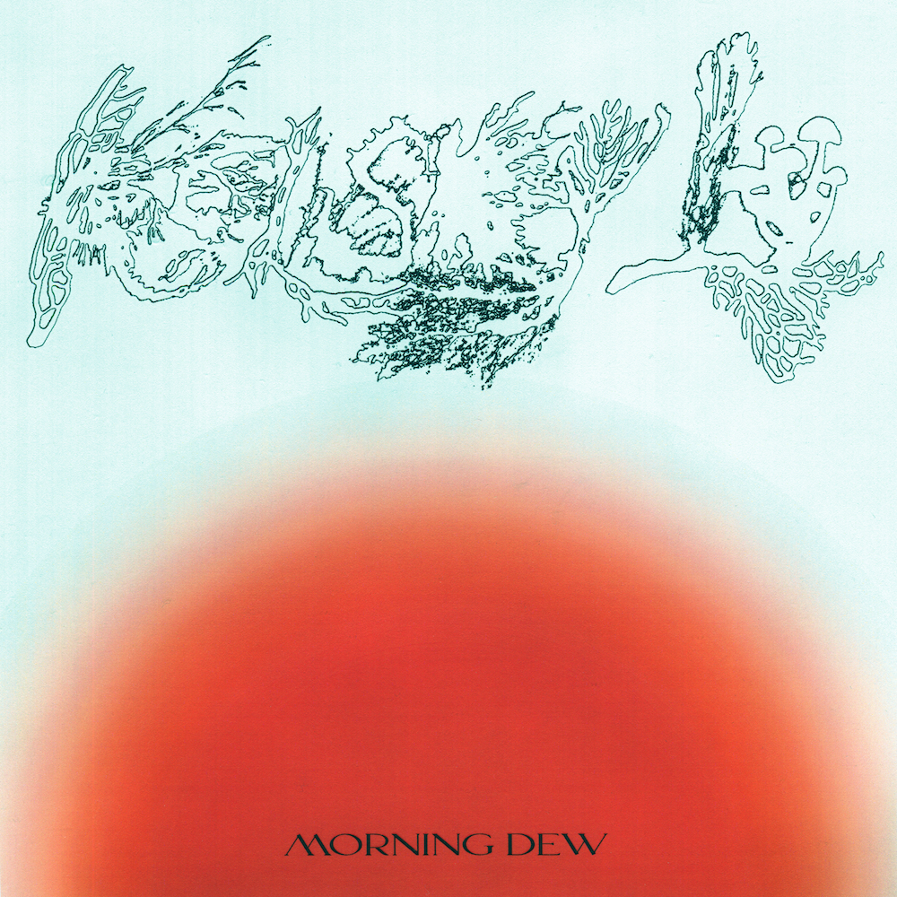

Kelsey Lu's album 'Blood' is critically acclaimed album. Blood has flourishes of classical, but also boasts swooning disco, lush pop, calming birdsong and gentle brushes of left-field electronics (Skrillex and Jamie xx feature)
    As a queer, Black woman, Lu’s own politics have always been clear – even when they were emerging back in 2016, they spoke very openly about the racism they experienced while modelling (something they did to support themselves after moving to New York once they were done with music school). During a particularly low period at that time, Lu recorded a hauntingly minimal performance in a Brooklyn church that would become their acclaimed debut EP, Church.